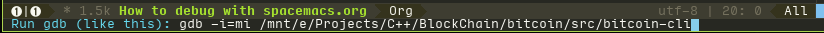
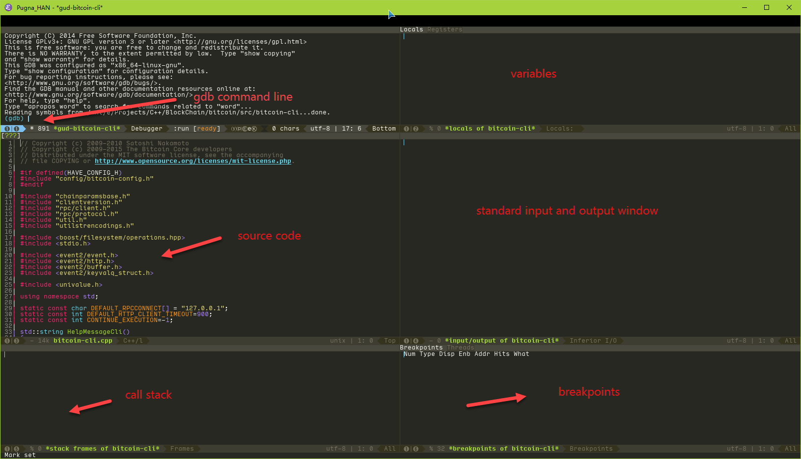

How to debug bitcoin by using spacemacs
1 Install emacs on your system
If you are using ubuntu, the easiest way is to use sudo apt-get install emacs24. However, if you want to install emacs25 on your system, you can refer the article.
Then clone the spacemacs repo by using git clone https://github.com/syl20bnr/spacemacs ~/.emacs.d.
Configure your own setting by modified the file of ~/.spacemacs.d/init.el. If you don't have it, please open emacs first. Alternatively, you can use my setting by using git clone https://github.com/PugnaHAN/.spacemacs.d.git ~/.spacemacs.d
2 Make sure you have install the toolchain
Before debug the bitcoin, you should make sure the gcc/g++/gdb have been installed on your system. sudo apt-get install build-enssiential may help you if you don't install it yet.
3 Build the bitcoin
Refer my another document. Make sure you have turn on the -g flag on configre.ac(it's on by default.). You can check the value of CXXFLAGS and CFLAGS on bitcoin/src/Makefile to confirm if you have turn it on or off. If not, just add -g -ggdb to CFLAGS and CXXFLAGS in Makefile.
4 Debug your bitcoin
Open your emacs, and press Alt-x (M-x M means meta), enter gdb. Then change the file path to your bitcoind or bitcoin-cli, shown below:

Figure 1: Picture 1. Change the path
Then, you can see the interface like this

Figure 2: Picture 2. Screenshot of gdb of emacs
4.1 Some useful commands of gdb
| Id | Command / Abre | Descritpion |
|---|---|---|
| 1 | break/b | add a break point |
| 2 | run/r | run the process |
| 3 | continue/c | continue |
| 4 | list/l (N1 N2) | list the code between n1 to n2 |
| 5 | file TARGET | load the symbals of target |
| 6 | set args ARGS | set the arguments |
| 7 | show args | show the arguments |
| 8 | next/n (N) | next N processes |
| 9 | step/s | next step |
| 10 | finish | finish current function and back to higher level function |
| 11 | until/u | complete all the current loop |
| 12 | jump N | jump to Nth line |
| 13 | return | force to return current function |
| 14 | call FUNC | call the function |
| 15 | print/p | print the variable |
| 16 | watch VAR(CONDITION) | watch a variable or stop when the condition is TRUE |
| 17 | info BREAKPOINT | show the information of breakpoint |
| 18 | delete BREAKPOINT | delete the breakpoint |
| 19 | clear N | clear the breakpoint at Nth line |
| 20 | backtrace | call stack |
| 21 | show language | DEFAULT is C document |
| 22 | kill | terminate the processing program |
| 23 | whatis VAR | the type of variable |
For more info, please baidu / bing / google what you want to know. gdb basic commands is a good introduction of gdb command.